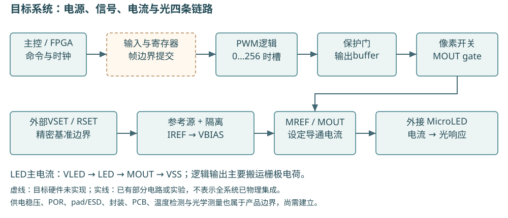
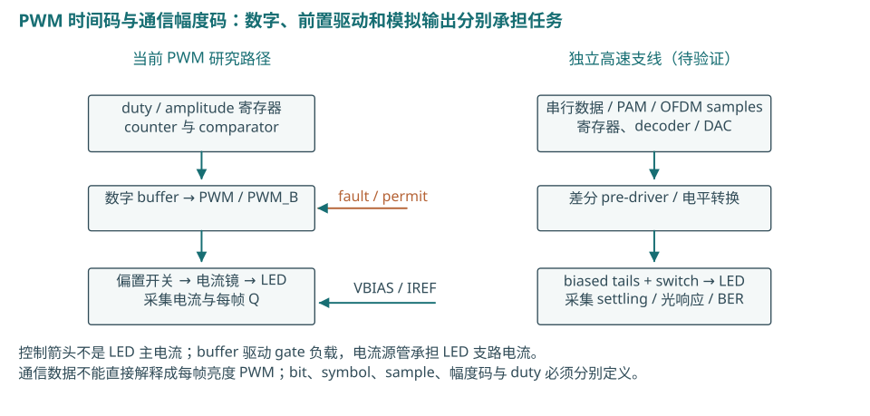
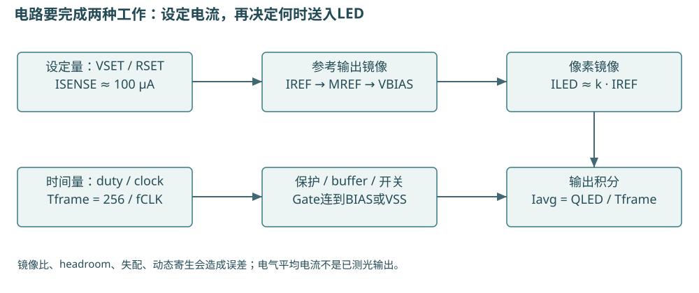
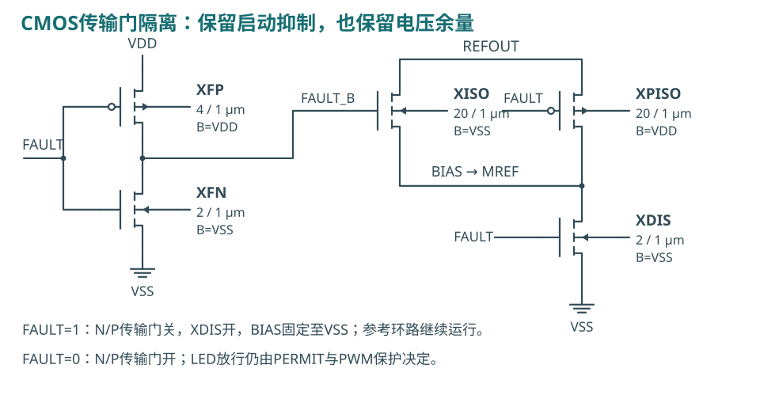
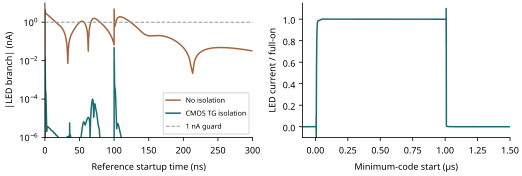
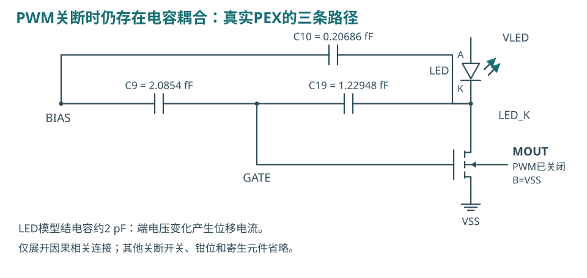
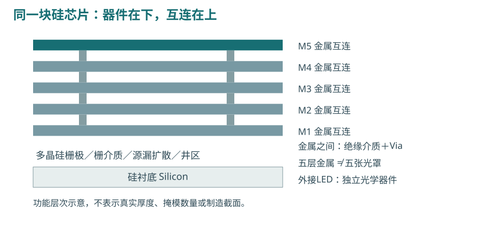
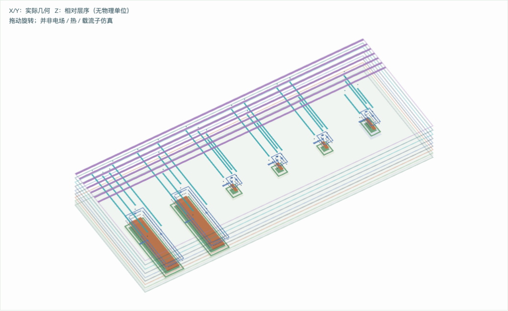
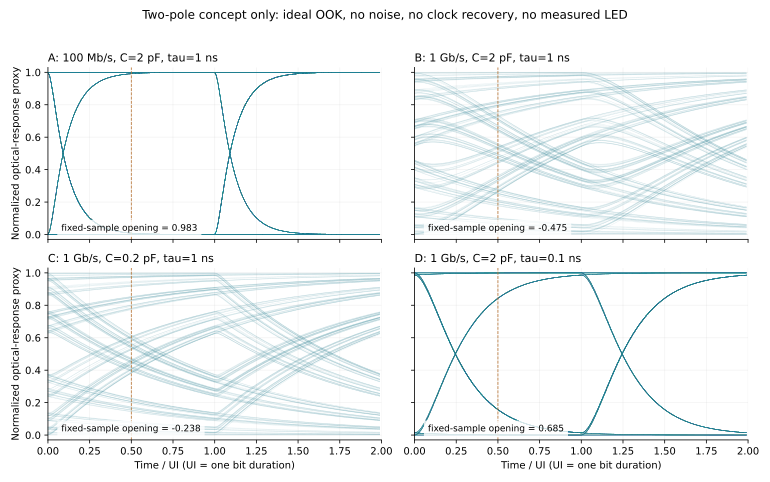
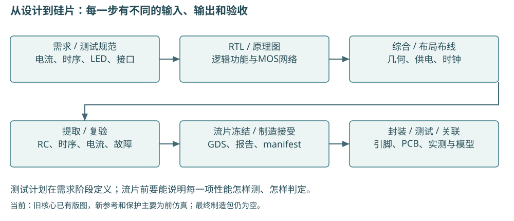

1 / 28
MicroLED驱动ASIC：从研究平台到产品开发框架
系统架构 · 数字与模拟电路 · LED模型 · 版图 · 高速光通信 · 流片与测试
2026-10-14｜Open MicroLED Driver ASIC｜实验性研发方法验证与教学
当前可以继续用开源环境完成单像素测试芯片的设计研究。现有证据尚不足以交付一颗可制造、可使用的完整产品芯片。 主要差距是新版参考及保护的物理实现、全供电与封装模型、真实LED动态数据，以及制造方接受的完整检查。
本报告把分散的研究组成一条开发链。先理解各模块的工作和接口，再看验证、版图和交付。普通PWM与高速光通信共用一部分电路知识；它们对动态性能、封装和测量的要求不同。
| 阅读目的 |
建议章节 |
| 快速掌握现状与方向 |
1–3、11、27 |
| 学习数字、缓冲、电流与负载 |
4–10 |
| 理解版图、材料、二维和三维 |
12–16 |
| 建立产品验证计划 |
17–18、23–27 |
| 深入高速通信 |
19–22，以及附录高速架构章节 |
证据标记： 已有仿真＝在明确模型和条件内执行过；已有版图＝旧核心的实际几何和检查；候选＝原理或待实现设计；教学计算＝人为条件下的公式或模型。所有光学、硅片及制造接受状态仍须单独建立。
本轮新增总框架、真实GDS可视化与教学模型，不修改先前电路实验结果。既有启动研究仍保留 passed=false。
2 / 28
2 先定义产品边界，再画ASIC框图

产品至少包括驱动ASIC、外接LED、电源、时钟／主控、封装、PCB、固件与测试方法。若是光通信，还包括光学耦合、探测器、接收放大与数据判决。晶圆厂只承担合同约定的制造环节。
建议的第一个工程载体：单像素混合信号测试ASIC，驱动外接MicroLED。 预留可观测性，使参考、PWM、保护和LED支路能够分别测试。阵列和高速支线在单像素边界明确后推进。
需求表必须写出：LED极性／型号和数据范围，电流设定及误差，PWM频率／最短脉冲，电源／温度，fault进入与恢复条件，I/O电压，封装／功耗及测量办法。未确定项应保留待定，不能由工艺节点代填。
当前100 µA、1 MHz时钟和256时槽是研究基线。0.1–7 mA是扩展研究范围，高速速率、BER和功耗预算尚未冻结为产品规格。商业产品架构不是本项目验收依据。
3 / 28
3 目前实现了哪些模块，连接在哪里
| 模块 |
当前实现与证据 |
接下来必须补的部分 |
| PWM |
RTL、综合、布线、旧GDS和时序回放 |
与新保护存储共同物理实现 |
| 数字末级buffer |
实际标准单元6MOS，被选入joint PEX |
完整前级波形及全供电网络 |
| 像素 |
NMOS镜像＋栅极开关＋钳位＋反相器，6MOS |
新外围接入后的重新布局／提取 |
| 参考电流源 |
10MOS VSET反馈候选，外部精密边界 |
环路、噪声、失配、真实R/C、版图 |
| 参考隔离 |
5MOS CMOS传输门方案，已联测 |
新负载全域验证与版图 |
| 独立保护 |
10MOS组合门＋2MOS LED旁路，恢复存储为RTL |
POR／brownout／sensor、物理存储、ESD |
| LED |
合成电气模型、单条公开静态I–V模型 |
同器件动态、电光、温度及批间差异 |
| 帧通信 |
Python接收模型，选单pixel回放 |
硬件receiver、CDC、寄存器接口 |
最新电气链为：实际RTL事件 → 声明10 ns边沿的PWL → 新保护门 → 旧joint PEX的buffer与像素 → LED模型。参考与旁路接在对应模拟节点。它是分阶段组合仿真，并非全部RTL、供电、封装和模拟反馈共同求解。
旧joint选取12MOS、45R、77C，34个邻居静态钳0；排除PG／source／body电阻及PG-only电容，保留选定信号对理想PG的耦合电容。已有完整数字宏的物理连接证据，不表示最新启动实验模拟了全数字宏。逐项审计
4 / 28
4 数字逻辑：让每一帧有确定的时间含义

pixel_pwm.v有8-bit计数器、9-bit阈值和寄存后的PWM输出。阈值允许0…256，分别包含精确全关与全开；大于256的输入被限幅。duty和enable只在帧边界提交，避免一帧中途改命令造成不完整脉冲。
Tslot = 1 / fCLK；Tframe = 256 / fCLK
当前 fCLK = 1 MHz → Tslot = 1 µs，Tframe = 256 µs，fPWM = 3.90625 kHz
理想100 µA、duty=1 → Q = 100 pC；duty=64 → Iavg = 25 µA
输出寄存可以隔离计数器／比较器组合毛刺，但实际clock-to-Q、setup／hold、clock skew和负载仍需STA与门级验证。复位为同步复位，必须有时钟边沿；紧急fault另走异步优先路径。
未来通信接口需增加命令校验、shadow register、一次性提交、超时、错误状态及readback。跨时钟域需要专门CDC设计；多bit数据不能靠每bit各接两个触发器保证一致。本项目尚无完整硬件接收器。
5 / 28
5 缓冲器：输出逻辑电压与提供LED电流是不同职责

数字output buffer为PWM控制线及MOS gate充放电。其负载包含gate电容、金属电容、耦合和输入状态相关电荷。需要检查VOH／VOL、上升下降时间、延时、短路电流、扇出和供电扰动。
旧平台用了实际GF180 buf_2末级晶体管，而非永远使用理想电压源。历史端口探针在TT／27°C／3.3 V条件下得到约36.7 fF的ΔQ/ΔV；0.1 MHz–1 GHz的不同偏置AC测量约30.30–36.93 fF。它们属于不同定义，不能直接当作一个恒定电容或完整Liberty表。接口研究
模拟bias buffer若引入，则要保持VBIAS精度、摆幅及噪声，并稳定驱动电容负载；普通数字反相器无法承担这一职责。当前参考servo输出也不能未经分析就当成理想低阻bias buffer。
教学尺度：搬运1 pF、1 V所需Q=1 pC；若在100 ps内完成，平均边沿电流约10 mA。这个例子解释高速pre-driver的需求，不是当前器件仿真值。扩大输出MOS会加重gate负载，不能沿用原buffer后仅提高时钟。
6 / 28
6 像素驱动：IREF怎样变成LED导通电流

IREF流入漏栅短接的MREF，建立VBIAS。PWM导通时，pass MOS把这个电位接到MOUT gate；MOUT在有足够漏源余量时吸收LED电流。PWM关闭时，gate钳位放掉电荷。反相器生成互补控制。
ILED ≈ IREF · [(W/L)OUT / (W/L)REF]
VLED ≥ VF(ILED) + VDS,required + ILED · Rpath
MREF与MOUT均为20/4 µm，名义镜像比1。电流不是从参考节点“经过gate流入LED”；主电流走 VLED → LED → MOUT → VSS。gate承担偏置及瞬态充放电。
镜像误差来自不同VDS、有限输出电阻、阈值与尺寸失配、温度和source回流压降。饱和区只是实现恒流的必要条件之一。方程用于理解，精度由compact model、工作点及实物决定。“六MOS”是此电路的器件计数，不是行业统一标准架构。
完整器件连接和PWM两种状态见逐管电路教程；上图只展开理解DC所需的两支路。
7 / 28
7 参考源：从理想IREF走向可实现电路

反馈放大器比较外部VSET与SENSE，调节PMOS支路，使 ISENSE≈VSET/RSET。当前VSET=0.5 V、RSET=5 kΩ，名义100 µA；POUT再把电流镜像到像素参考端。SENSE电流、POUT电流与最终LED电流应分别测量。
旧servo的180点离散网格，在输出固定1.4 V、外部VSET／RSET各±0.1%假设下得到98.942–99.520 µA参考输出；未覆盖随机失配、噪声或完整新隔离负载。更早的beta-multiplier在135组合中126个超±5%，因此保留为研究对照。
CCOMP=3 pF及RBIAS=100 kΩ仍为理想元件边界，VSET也不是片上bandgap。若改成片上电阻／MIM电容，必须使用对应PDK器件与寄生，重做DC、稳定性和启动验证。精密外置RSET可作为第一测试芯片选择，但仍要定义引脚、接触和容差预算。
下一步关键指标： 环路增益／相位裕量、负载及供电阶跃、PSRR、噪声、offset、失配、外部设定误差和全部上电顺序；不能以DC准确代替这些验证。
8 / 28
8 幅度调节、PWM和阵列均匀性

0.1–7 mA可研究改变IREF、分段电流DAC、或VSET＋sense反馈。70份100 µA单位电流仅是名义编码方法；尚未实现70个开关、decoder、buffer、校准及其版图。几何增益仿真不能称为可编程DAC完成。
若sense电阻为100 Ω，10–700 mV对应0.1–7 mA，最大sense耗散4.9 mW。假设放大器offset为0.1 mV，则电流误差约1 µA，在100 µA处已占1%。这是教学预算，实际电路需计入余量和稳定性。
数组要分开验证共同reference误差、各像素失配、空间梯度、IR drop、温升和LED光效差异。共享IREF只能控制共同设定；电流一致也不保证光亮度一致。匹配布局、供电回流、trim及光学校准分别处理这些问题。
当前选择：先闭环单像素。 之后以4×4验证不同位置、图案、同步／错相PWM及温度下的电气和光学分布，不从单像素Monte Carlo推断整阵列良率。
9 / 28
9 LED负载：静态曲线、动态电路与光响应要分层
| 模型层次 |
输入／输出 |
当前可信边界 |
| 合成电气二极管 |
N、IS、RS、CJO、TT → 电流／电压 |
N=3、RS=50 Ω、CJO=2 pF、TT=1 ns等为假设 |
| 公开静态I–V |
单条公开曲线插值 → DC及余量 |
黄色20 µm器件100点曲线；器件数／重复次数未知 |
| 动态电气 |
C(V,I)、rd、封装RLC → 电流瞬态 |
缺同器件实测动态拟合 |
| 电光响应 |
I、T、载流子与效率 → Popt(t) |
尚无合格的本项目光学模型或测量 |
| 链路模型 |
发光、光路、PD／TIA／判决 → BER |
当前只能构建明确假设的研究模型 |
公开静态数据在7 mA插值得VF≈5.135606 V，已经高于5 V供电。在UNIT_COUNT=70、名义7 mA的历史几何缩放试验中，该负载在5 V下得到约3.6426 mA，6 V研究点约6.9493 mA；前者不是所有5 V设计的电流上限。6 V研究点也不代表全部节点的可靠工作电压。 静态数据与拟合
同一器件至少需要：I–V及测量温度、C／阻抗随偏置变化、电光小信号频响、大信号光脉冲、光功率与温度／电流关系、允许电流及封装寄生。SPICE中TT=1 ns的二极管参数不能直接等同真实LED光学寿命。
模型应记录数据域和外推占比；超出实测域仍能收敛，并不代表已验证。电流波形、方向电荷和光功率各自使用正确的测量端口与单位。
10 / 28
10 独立保护：数字停钟时仍须能关断

保护组合门实现 protected_PWM = raw_PWM ∧ permit ∧ ¬fault。fault同时驱动LED旁路，减小LED端储存电荷导致的尾流；恢复存储保持inhibit，fault消失不等于立即点亮。恢复要有有效时钟、显式请求及raw PWM低电平条件。
参考启动时，BIAS经寄生电容耦合到像素gate与LED阴极。单纯关PWM不能完全消除此端口位移电流。新5MOS隔离使用NMOS／PMOS传输门，fault期间断开reference output并放掉BIAS。
单NMOS隔离旧候选在SS条件损失约1.167 V余量，最终只有68.05 µA，故未采用。CMOS传输门恢复了相应范围内的DC传递；仍须检查故障期间reference输出状态、释放瞬态、体端偏置和电源顺序。
现有测试以有效logic／LED电源和外部fault为前提，只让reference rail启动。片上POR、欠压、热保护和传感器仍需设计；LED旁路不是ESD器件，也不是全部失效模式的安全保证。
11 / 28
11 可用于工程判断的现有仿真数据

| 指标与条件 |
已有结果 |
如何使用 |
| 匹配有限结模型／Gear启动A/B，100 ns ramp |
4.837→0.04775 nA峰值 |
隔离减小了所测启动端口电流 |
| 新方案，包含late-VSET试验的最大启动峰 |
0.05295 nA |
低于原1 nA守卫，限已测条件 |
| TT／SS／FF联测满开 |
99.977／97.739／100.855 µA |
三包络通过100 µA±5% |
| 停钟fault最慢进入稳定关断 |
299.22 ns |
通过原1 µs合同；不是光学测量 |
| TT最低码电荷误差，2 ns步长上限 |
−0.042843% |
通过原±2%电气合同 |
| 启动极小Q+，10→2 ns相对变化 |
4.909% |
原0.2%门槛仍失败 |
新实验为21 transient、12 DC、134项检查；功能合同通过，整体 passed=false。绝对Q+差约2.41×10⁻²² C很小，但不能据此悄悄改动原相对门槛。参考输出存在约+0.2167 V的端子高于bulk记录，尚未完成衬底电流和可靠性判断。冻结证据
12 / 28
12 布局：从电路关系变成物理位置
先划分数字区、参考／偏置区、像素输出区、供电回流和I/O。放置依据是匹配、敏感节点、功率及信号路径，不应简单按原理图从左到右排列。
| 区域 |
主要布局原则 |
必须验证的代价 |
| MREF／MOUT、差分输入对 |
同单位、同方向、相近环境，按需求交错／共心 |
增加互连后寄生与电压差 |
| BIAS／SENSE／补偿节点 |
短连接，避开强切换线，必要时屏蔽 |
屏蔽增加对地电容，改变稳定性 |
| 像素输出与LED pad |
缩短大电流路径，足够contact／via |
pad／ESD／金属引入电容 |
| 数字PWM与clock |
受约束自动布局布线与时钟树 |
clock噪声、串扰、供电弹跳 |
| well／body／guard ring |
根据PDK显式接触和隔离 |
面积、寄生；不等于latch-up已合格 |
新reference与保护宜先做可独立验证的模拟hard macro，产生GDS、LEF、schematic／extracted netlist与端口定义。数字保护存储另做综合和物理实现，再放入共同top。
共心与dummy是减小某些系统误差的方法，不保证所有随机失配消失。当前独立PCell不自动构成共心阵列；须按真正的单位分割重新设计并复验。GF匹配指南
13 / 28
13 布线：为什么原理图正确仍可能失败

连线有电阻，邻近导体之间有电容，高速或封装回路还有电感。它们改变source电位、bias建立时间、PWM脉宽、输出过冲和供电噪声。当前启动失效就是一个真实PEX电容影响行为的例子。
电阻压降：ΔV = I·R；电容耦合：i = C·dv/dt；回路电感：ΔV = L·di/dt
先控制回流路径及敏感节点耦合，再考虑线宽、层选择、屏蔽和via阵列。数字／模拟地的处理需基于实际回流分析；随意切开地平面可能增加回路，不是通用隔离办法。
7 mA的公开125°C单向EM规则算术下界：普通金属约10.45 µm宽、11 kÅ顶金属约4.67 µm宽、0.26 µm对应via约39个。尚未加裕量，也未验证均流、拥挤、温度、寿命与瞬态。不能用此数字直接签核布线。GF EM规则
PEX必须来自最终包含fill的几何；修改布线、器件、pad或填充后重提取。当前selected signal PEX没有闭环完整供电和body网络。
14 / 28
14 材料、工艺节点与金属层分别是什么

驱动ASIC采用硅基CMOS平台；NMOS和PMOS描述互补晶体管类型。LED是独立发光器件，本项目静态样本为InGaN；不同波长与结构须另查材料。选择高速driver并不自动要求把硅MOS换成GaN。
当前物理平台GF180MCU D是180 nm级工艺配置。像素与新增模拟电路采用6-V模型；旧数字标准单元buffer使用5-V MOS家族，名义logic供电3.3 V。节点名称不是所有器件的实际L；电流镜L=4 µm，参考输入管更长。器件类别名称不能替代逐端子可靠性检查。
锁定D配置对应5LM_1TM_11K，即M1–M5五层互连金属。井、扩散、多晶硅、contact、via、钝化等另有层和加工步骤；五层金属不等于五张掩模。氧化层、掺杂、导体及介质的完整工艺参数须遵守具体PDK／制造版本，不自行拼成生产工艺配方。
高速可以评估硅CMOS，必要时比较SiGe BiCMOS等平台；BCD更多涉及高压／功率集成需求。选择依据是电压、速度、输出电流、寄生、模型、IP、封装与制造可得性，不能仅按节点小或材料特殊排序。制造细节与来源
15 / 28
15 可以看到真实二维芯片版图

这些图从仓库实际GDS读取，按锁定层映射着色；不是生成式概念图。旧数字PWM宏为180×180 µm；旧像素宏为95×37.66 µm；共同top占用跨度为305×180 µm，即0.0549 mm²。
共同跨度不是最终die。 它没有包含新reference、TG隔离、新保护、pad／ESD、seal ring和最终制造边界。ΣW·L=170 µm²也只是旧六MOS栅几何面积，不能替代宏面积。
估算时先取实际模拟宏面积，加数字标准单元面积／利用率，再留供电和路由余量；最终die还受pad ring与制造slot约束。金属层数不乘入平面面积。3 pF电容若假设1 fF/µm²密度，主极板就要3000 µm²，已接近旧像素宏面积；实际类型及边缘开销待定。
放大到六只MOS的像素局部二维图，可逐个看MREF、MOUT、开关和反相器。层开关、缩放和三维分层查看见交互式版图浏览器。几何、层号、DBU、GDS hash与统计见manifest。这里没有新增DRC／LVS或改变GDS。
16 / 28
16 三维“看见”和三维“仿真”是四件事

| 表达／分析 |
能回答的问题 |
必要输入与当前状态 |
| 2D GDS视图 |
器件与导线放在哪里，哪层有哪些图形 |
本轮已由实际GDS生成 |
| 2.5D／3D几何堆叠 |
上下层关系、相对位置、布线穿越 |
本轮已做相对z层高的交互示意 |
| 3D电磁／热分析 |
RLC、耦合／S参数，温升及热路径 |
需要真实stack、材料、端口、边界、封装；未执行 |
| 工艺／器件TCAD |
掺杂、结结构、载流子、电场和器件物理 |
需要工艺剖面及校准参数；未建立 |
本轮浏览器的z高度是说明层次的假设。二维图形按层放置并不能恢复真实沉积、刻蚀、侧壁和晶体管结构；没有电场、温度或电流密度计算。它不是最终芯片的三维物理仿真。
KLayout原生2.5D也采用按层垂直拉伸的几何方法，可用于空间理解；完整电磁分析可评估openEMS等求解器，需建立材料和网格收敛。完整裸片通常采用电路compact model＋PEX，关键高速互连／封装局部做场求解，避免把所有晶体管都用TCAD求解。KLayout手册§2.8；openEMS
最终可视化可以包括DRC标记、LVS差异、拥塞、时序、IR drop、电流密度、波形和眼图。每张图必须写清它来自真实提取、模型计算还是概念几何。
17 / 28
17 模拟电路验证：要做哪些实验
| 验证问题 |
仿真方法／输出 |
当前需要增加的工作 |
| 设定正确及余量 |
DC sweep、工作点、I／V／功耗 |
新TG＋reference全域；真实负载范围 |
| 工艺／温度／电源 |
PVT角与独立外部误差组合 |
不能仅三包络替代完整矩阵 |
| 器件差异 |
global process与local mismatch分开MC |
校准统计模型、样本／seed／置信说明 |
| 反馈稳定 |
环路增益、相位裕量、阶跃及恢复 |
负载／R/C／供电角，避免错误断环 |
| 精度动态来源 |
AC／noise、PSRR、offset及温漂 |
真实电阻、电容、参考输入噪声 |
| 脉冲与保护 |
transient、Q+／Q−、峰值、off及恢复 |
全电源顺序、停钟、开路／短路、重入fault |
| 版图后性能 |
RC corner＋相同输入回归 |
新宏及全PG／body／pad／package模型 |
必须保存网表、模型hash、工具版本、温度、电源、负载、初始条件、容差和最大步长。各指标注明测量节点与窗口；对不等步长时间样本做加权积分。
既有100 µA±5%、最低码±2%、关断1 nA／1 µs属于研究合同。产品的温区、精度、稳定性裕量、噪声与可靠性标准需先冻结；建议值不能标成已经通过。
仿真不能完全保证制造良率或真实光学输出。电气模型校准和回片关联用于逐步缩小不确定性。
18 / 28
18 数字与物理验证：DRC／LVS之外还有什么
| 层次 |
核心检查 |
留存文件 |
| RTL |
边界码、帧更新、reset、fault、恢复、CDC |
testbench、断言、波形、coverage说明 |
| 综合／门级 |
等价、约束、clock、setup／hold及异步路径 |
netlist、SDC、STA、SDF回放 |
| 几何／连接 |
完整DRC、LVS、ERC、well／body、层映射 |
GDS、报告、豁免清单、回读结果 |
| 生产规则 |
antenna、density、fill、边界与seal ring |
对应deck／选项与完成报告 |
| 电源／可靠性 |
IR drop、段电流／EM、端压、ESD／latch-up |
PG模型、活动条件、可靠性检查 |
| 顶层／封装 |
pad map、pinout、电压域、bond、package与PCB |
连接表、封装模型、测试向量 |
DRC检查几何规则；LVS检查提取电路与原理图的一致性。它们不直接证明电流准确、启动安全或链路BER合格。某些匹配／可靠性规则也可能未编码，需人工审查。
OpenROAD的PDNSim可报告静态IR drop及段电流并导出PG网络，但这不自动覆盖动态ground bounce、衬底耦合、全部模拟电源与制造方EM签核。官方能力说明
当前旧核心已有特定选项下的物理检查；新版reference／protection不在这些报告中。所有签核必须指向同一个冻结top和版本。
19 / 28
19 高速通信：从亮度命令改为符号波形

发送链： payload／PRBS → 编码与成帧 → serializer或采样DAC → retiming／pre-driver → 电流调制级＋慢速bias控制 → LED → 光路。接收链需PD、TIA、滤波／均衡、采样／CDR、判决及误码统计。
OOK使用两档光强；PAM使用多档；OFDM的DAC按采样值形成模拟波形。bit rate、symbol rate、sample rate和并行lane数必须分开。不能把1 MHz PWM研究的时槽直接换名为通信速率。
最小高速研究平台可先用外部FPGA／pattern generator提供已知数据和时钟，只设计一个调制通道；把片上PLL／serializer／CDR列为后续功能。这样仍需核查输入I/O、jitter和pre-driver，不能把外部高速数据当理想无误差刺激。
公开研究已有落地路线：2017年AMS 0.18 µm CMOS DAC研究，在1 m、4-PAM和特定BER门槛下报告四通道总raw速率1.23–1.30 Gb/s；不是单通道，也不是本项目性能。原文§IV-C
当前仓库没有完整高速ASIC的RTL、晶体管链或版图。接收端可在外部，但系统目标BER必须包含它。详细架构与来源
20 / 28
20 高速输出级：为什么常研究恒偏置和电流舵

尾电流源保持设定，差分switch根据数据把电流切换到LED支路或dummy支路。必要时叠加I_BIAS，形成 I0=IBIAS、I1=IBIAS+IMOD。这减少了每bit重建大电流源gate偏置的需求，但switch与LED端电容仍要充放电。
Cascode可减小尾电流源漏端摆动，同时增加电压余量和节点电容。dummy可改善切换负载一致性，同时增加功耗；若保持电流流过dummy，不能只统计LED亮时的能量。
Pre-emphasis用短暂额外电流补偿有限带宽，需要规定脉冲宽度、幅值、端压和LED允许瞬态电流。模拟小信号反馈一般负责慢速bias，不让参考servo未经设计地追踪每个高速bit。
这些是技术路线，不是唯一标准电路。电压开关、单端电流开关、分段DAC或推挽结构也可按LED极性与系统约束评估。当前图是独立教学候选，不宣称已经实现或达到论文速率。
21 / 28
21 高速为什么要求新的模型和测量

1 Gb/s NRZ的单位间隔UI=1 ns。若为教学预算把10–90%边沿设为0.2 UI，单极点近似需要约0.35/0.2 ns=1.75 GHz带宽。它不是完整链路的统一带宽规则；多极点、均衡、编码和接收判决都会改变结果。
上图采用 H(s)=1/[(1+sRC)(1+sτ)]。R=100 Ω、C=2 pF、τ=1 ns时，计算−3 dB带宽153.35 MHz；C降10倍仅升到159.09 MHz。全部为人为场景，说明光响应较慢时只改布线电容收益有限，不代表GF180或真实LED性能。固定0.5 UI的负开口表示样值重叠，不是负光功率或最大速率判定。完整计算
实际设计还要测I0／I1、过冲、全rail能耗，拟合同器件电光频响，加入封装RLC／S参数、接收噪声、jitter及均衡。眼图只是其中一层证据。
“眼图看起来张开”不足以证明BER。若在独立、平稳Bernoulli错误假设下零错误，要给出BER≤10⁻¹²的约95%单边上界，需约3×10¹² bit；1 Gb/s约50分钟。接收误码相关、漂移和burst error还需另评估。可重算假设
22 / 28
22 PWM与高速通信：同一设计基础，不同优化目标
| 维度 |
当前PWM研究主线 |
高速光通信候选主线 |
| 控制量 |
每帧幅度、占空比、enable |
每symbol／sample的幅度与时间 |
| 数字 |
counter、寄存器、故障优先级 |
serializer、retiming、编码／PRBS、低jitter时钟 |
| 输出 |
栅偏置开关镜像，可研究电流舵 |
恒bias＋快速switch／DAC／预加重 |
| 关键指标 |
DC误差、最短码Q、关断／均匀性 |
光带宽、眼图、jitter、BER、pJ/bit |
| 布局 |
匹配、参考隔离、PG、热分布 |
另重视差分对称、局部时钟、关键节点电容 |
| 布线 |
IR／EM、耦合、脉冲误差 |
另重视RLC、传播延迟、阻抗、return连续性 |
| 封装 |
电流、散热、引脚和寄生 |
更严格评估bond／bump、pad电容和互连长度 |
| 材料／工艺 |
当前GF180硅CMOS研究基线 |
可仍为硅CMOS；是否换平台须以模型和预算决定 |
不是每根高速片内线都必须50 Ω，也不是所有PWM连线都可以忽略电感。是否按传输线处理取决于边沿、传播时间和几何；接收／驱动阻抗由接口规定。
教学例：假设1 nH回路，7 mA在100 ps变化，L·di/dt=70 mV。缩短回路、减小寄生与封装协同可能比单纯缩小MOS节点更有用。该值不是实际封装测量。
23 / 28
23 目前开源环境能做到哪里
| 工作 |
当前环境／可扩展工具 |
能力边界 |
| 原理图／SPICE |
现有文本netlist＋ngspice；可加Xschem |
compact model必须覆盖器件／偏置／频率 |
| 数字仿真／实现 |
Icarus、Yosys、LibreLane／OpenROAD |
现有PWM已跑；新receiver／高速IP待设计 |
| 模拟布局／提取 |
Magic、PCell、Netgen、KLayout |
新宏可继续做；接受deck与完整规则须确认 |
| 图形与数据分析 |
KLayout、Python、浏览器 |
本轮2D／2.5D、已有波形、教学眼图 |
| 电源分析 |
PG提取＋SPICE、PDNSim |
需要真实电流活动、供电接点和网络 |
| 高频EM／热 |
可扩展openEMS及热求解环境 |
尚未配置本芯片stack／package／校准 |
| 流片接受 |
选定MPW／foundry流程 |
工具运行成功不等于厂商接受 |
可以在现有开源路线完成大量真实设计与验证工作，也能生成GDS。 是否可直接生产，取决于具体服务商接受的PDK、层栈、库、rule deck、检查项目和设计结果。不能承诺开源工具自动覆盖所有产品／节点的签核。
本项目已有macOS模拟环境和锁定Linux数字流程。新工具先做小规模校准，再纳入版本与hash管理；不必为“做ASIC”立即更换全部平台。高速薄氧器件、RF模型和高速I/O缺口若无法由当前PDK覆盖，再评估其他平台。
24 / 28
24 真实流片项目应该留下什么仿真数据
每条指标需有一条可复现的“需求 → 测试 → 输入 → 结果 → 判定”记录。数据包应包含结果表、关键波形、原始日志、网表／约束／模型身份、执行命令和失败说明，而不是只交截图。
| 记录例 |
必填内容 |
| DC-001 电流精度 |
电流码、温度、电源、LED、VDS、误差分母、reference状态 |
| TR-001 最小PWM |
时钟、边沿、积分窗口、Q目标、步长／容差、源与提取版本 |
| FAULT-001 关断 |
故障触发点、停钟状态、阈值持续定义、Q+／Q−及恢复条件 |
| LOOP-001 稳定性 |
环路断点／注入方法、负载、R/C、角、gain／phase及瞬态关联 |
| PHY-001 物理 |
top、GDS hash、deck版本、开启选项、错误／waiver及复验 |
| LINK-001 链路 |
pattern、bias、速率、receiver、噪声、样本数、FEC前后BER |
附带验证计划与当前状态和流片包manifest模板。模板明确标记 ready_for_submission=false，没有把旧GDS填成新芯片最终版。
对已有结果，使用evidence审计、启动数据与版图manifest追溯。原始生成物保留在build，紧凑证据保留在evidence；新文档不改变旧实验hash。
25 / 28
25 交给晶圆厂什么，谁负责把设计做出来
| 接收方 |
通常要交付的内容 |
对方职责与边界 |
| ASIC设计服务／turnkey |
产品需求、接口、原理图／RTL、验收与测试规范 |
按合同完成或协助设计、后端、制造和测试 |
| 晶圆厂／MPW服务 |
冻结版图、工艺配置、top／层表／尺寸、检查及身份信息 |
检查数据接受条件并执行约定制造 |
| 封装测试OSAT |
die／pad map、坐标与方向、pinout、bond图、封装与测试规范 |
切割／封装／测试，具体服务需确认 |
GF公开tapeout checklist明确要求层次化GDSII、全部相关绘制层与DRC通过。部分服务支持OASIS，但应以实际接收规范为准。照片、三维模型和仿真波形不能代替版图数据库。 GF官方清单
建议冻结包按 layout / technology / netlists / verification / package / test / manifest组织：GDS及hash；PDK／stack／层号／单位／top；参考网表与工程视图；DRC／LVS／PEX／STA及未编码规则说明；pad坐标和封装连接；电测向量与limits。哪些文件上传，由接收方清单决定。
目前没有选定制造slot、最终pad ring、封装、价格或排期，也没有外部提交。先拿到服务商书面接受条件，再完成统一版本的设计冻结；foundry可制造检查不能代替功能验收。
26 / 28
26 从晶圆到“拿来能用”的产品

制造通常经历掩模数据处理、晶圆器件／互连加工、晶圆测试、切割、封装、成品测试与系统验证。某次MPW是否包含probe、封装或测试要按合同确认，不能从“提供芯片”自行推断。
测试芯片应预留可控clock／reset／fault、外部设定、状态readback及可观测电流节点。测试pad也会增加电容和面积；高速敏感节点宜设计低扰动观察方式，不能随意拉长测试线。
回片先检查引脚与短路、限流上电、静态功耗和默认关断，再测reference、DC电流、PWM电荷与保护，最后接真实LED做电光和温度测量。高速另测输入jitter、S参数／眼图／BER，并与同条件模型关联。
需要测试PCB、去耦／散热、仪器带宽和校准、探针／封装寄生、自动化脚本及判定limits。流片前应已能在仿真中执行这些测试场景，明确哪些故障可由测试检出。
27 / 28
27 建议按这些门槛推进，逐步建立完整能力
| 阶段 |
具体交付 |
进入下一阶段的依据 |
| A 规格／模型 |
单像素接口、电源、LED、测量和错误预算 |
待定项关闭；外部精密边界可采购／可测 |
| B 电路闭环 |
reference＋TG＋fault＋真实被动元件 |
稳定性、噪声、全供电、失配、动态合同；解释数值失败 |
| C 新物理实现 |
模拟hard macro＋数字保护＋共同top |
新DRC／LVS／全PEX；与前仿真逐项比较 |
| D 测试芯片集成 |
pads／ESD／POR、封装、PCB、测试模式 |
电源与端压／可靠性检查、板封装仿真、测量可执行 |
| E 制造冻结 |
同版本签核、manifest、接收方清单 |
明确制造接受与剩余风险，完成数据审核 |
| F 回片关联 |
电气／光学数据、模型差异与改版 |
已知温度／器件／条件下达成规格 |
| G 扩展支线 |
4×4一致性，或一通道高速调制 |
各自的新功耗／带宽／均匀性合同 |
当前重点在B，同时需补齐产品级A，并拥有部分旧C阶段经验。B里优先处理严格启动Q+数值收敛、reference环路及body偏置／上电顺序，再把新模块带入C。不要为了扩大阵列而跳过这几项。
高速可以并行收集同器件频响／光响应、定义链路预算和比较一通道拓扑；尚不应承诺速率、材料升级或直接做完整SerDes芯片。项目价值是建立可复用的验证方法、模型和测试能力，再由证据决定产品方向。
28 / 28
28 深入资料、来源与复现入口
本报告的图形为本项目独立绘制、真实GDS重绘或已有工程波形；教学模型另有标签。公开论文的电路和性能条件见高速附录，不能移用为本芯片实测数据。
主要官方资料：GF设计规则、器件可靠性、tapeout checklist、ngspice手册、OpenROAD静态电源分析、公开MPW precheck、KLayout 2.5D手册、openEMS。访问／核查日期为2026-10-14。
本轮未执行新的晶体管／布局签核批次，没有提交晶圆厂，也没有制造或光学测试。新增内容把当前成果、必要验证和交付接口组织起来，让下一轮工作可以逐项验收。